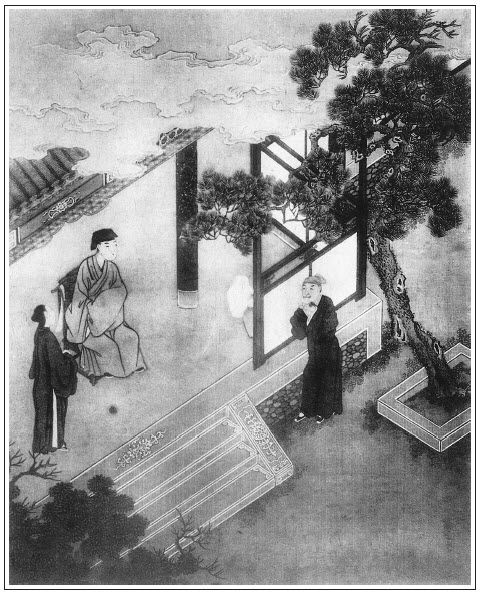

張回以上四十七回俱是接連而下，至此截住上文，另起頭緒。寫一苗員外與西門大官人作對，見苗員外以一刁氏而喪其事，況西門以如許妖孽隨其左右，雖欲不亡，其可得乎？其不死於來旺、來爵之手者，有幸有不幸耳！
刁氏，苗員外妾也，且可以殺身，況非已所有而掘之乎？
寫陳三、翁八之惡，襯起苗青；寫苗青之惡，又襯起西門慶也。然而寫王六兒、夏提刑等無非襯西門慶也。西門慶之惡十分滿足，則蔡太師之惡不言而喻矣。
一路寫樂三嫂、王六兒、玳安兒、樂三、西門慶、夏提刑、平安、書僮、琴童各色人等，一時忙忙碌碌，俱為一死囚之苗青呼來喝去的使喚。甚矣！財之可畏如此。苗員外以財亡身，西門不以此為鑒戒，而尚貪其逆奴之賂，豈不計及來保等之觀望乎？
詩曰：
懷璧身堪罪，償金跡未明。
龍蛇一失路，虎豹屢相驚。
暫遣虞羅急，終知漢法平。
須憑魯連箭，為汝謝聊成。

話說江南揚州廣陵城內，有一苗員外，名喚苗天秀。家有萬貫資財，頗好詩禮。年四十歲，身邊無子，止有一女尚未出嫁。其妻李氏，身染痼疾在床，家事盡托與寵妾刁氏，名喚刁七兒。原是娼妓出身，張旁比六兒加等者也。張夾便該死。天秀用銀三百兩娶來家，納為側室，寵嬖無比。繡眉要娼妓便是死兆。忽一日，有一老僧在門首化緣，自稱是東京報恩寺僧，因為堂中缺少一尊鍍金銅羅漢，故雲遊在此，訪善紀錄。天秀問之，不吝，即施銀五十兩與那僧人。張旁報恩者，孝字也。不孝而天不佑矣。堂中缺少一尊，令人落淚。安得黃金一鑄其身哉！故後文用曾孝序申冤也。僧人道：「不消許多，一半足矣。」天秀道：「吾師休嫌少，除完佛像，餘剩可作齋供。」那僧人問訊致謝，臨行向天秀說道：「員外左眼眶下有一道死氣，主不出此年當有大災。你有如此善緣與我，貧僧焉敢不預先說知。今後隨有甚事，切勿出境。戒之戒之。」言畢，作辭而去。
那消半月，天秀偶游後園，見其家人苗青張旁點出。正與刁氏亭側私語，不意天秀卒至看見，不由分說，將苗青痛打一頓，誓欲逐之。苗青恐懼，轉央親鄰再三勸留得免，終是切恨在心。張夾西門不死來旺手，亦幸矣。不期有天秀表兄黃美，原是揚州人氏，乃舉人出身，在東京開封府做通判，亦是博學廣識之人。張旁已伏孝序年誼。一日，寄一封書來與天秀，要請天秀上東京，一則遊玩，二者為謀其前程。苗天秀得書大喜，因向其妻妾說道：「東京乃輦轂之地，景物繁華，吾心久欲遊覽，無由得便。今不期表兄書來相招，實慰平生之意。」其妻李氏便說：「前日僧人相你面上有災厄，囑咐不可出門。此去京都甚遠，況你傢俬沉重，拋下幼女病妻在家，未審此去前程如何，不如勿往為善。」張旁無子，可知又為後文苗青地也。天秀不聽，反加怒叱，說道：「大丈夫生於天地之間，桑弧蓬矢，不能邀游天下，觀國之光，徒老死牖下，無益矣。況吾胸中有物，囊有餘資，何愁功名不到手？張夾有囊裡，兼有胸中，乃功名不得，刁氏之罪，天秀自己之罪也。此去表兄必有美事於我，切勿多言！」於是吩咐家人苗青，收拾行李衣裝，多打點兩箱金銀，載一船貨物，帶了個安童並苗青，上東京。囑咐妻妾守家，擇日起行。正值秋末冬初之時，從揚州碼頭上船，行了數日，到徐州洪。但見一派水光，十分陰惡。但見：
萬里長洪水似傾，東流海島若雷鳴。
滔滔雪浪令人怕，客旅逢之誰不驚？
前過地名陝灣，苗員外看見天晚，命舟人泊住船隻。也是天數將盡，合當有事，不料搭的船隻卻是賊船。兩個艄子皆是不善之徒：一個名喚陳三，一個乃是翁八。常言道：不著家人，弄不得家鬼。這苗青深恨家主，日前被責之仇一向要報無由，口中不言，心內暗道：「不如我如此這般，與兩個艄子做一路，將家主害了性命，推在水內，盡分其財物。我回去再把病婦謀死，這分傢俬連刁氏，都是我情受的。」正是：
花枝葉下猶藏刺，人心怎保不懷毒。
這苗青於是與兩個艄子密密商量，說道：「我家主皮箱中還有一千兩金銀，二千兩緞疋，衣服之類極廣。汝二人若能謀之，願將此物均分。」陳三、翁八笑道：「汝若不言，我等亦有此意久矣。」是夜天氣陰黑，苗天秀與安童在中艙裡睡，苗青在櫓後。將近三鼓時分，那苗青故意連叫有賊。張旁用苗青「叫」，妙。苗天秀夢中驚醒，便探頭出艙外觀看，被陳三手持利刀，一下刺中脖下，推在洪波蕩裡。那安童正要走時，吃翁八一悶棍打落水中。張旁舟中待走何處？人慌確有此情。三人一面在船艙內打開箱籠，取出一應財帛金銀，並其緞貨衣服，點數均分。二艄便說：「我若留此貨物，必然有犯。你是他手下家人，載此貨物到於市店上發賣，沒人相疑。」因此二艄盡把皮箱中一千兩金銀，並苗員外衣服之類分訖，依前撐船回去了。這苗青另搭了船隻，載至臨清碼頭上，鈔關上過了，裝到清河縣城外官店內卸下，見了揚州故舊商家，只說：「家主在後船，便來也。」這個苗青在店發賣貨物，不題。
常言：人便如此如此，天理未然未然。可憐苗員外平昔良善，一旦遭其僕人之害，不得好死，雖是不納忠言之勸，其亦大數難逃。不想安童被一棍打昏，雖落水中，幸得不死，浮沒蘆港。忽有一隻漁船撐將下來，船上坐著個老翁，頭頂箬笠，身披短蓑，聽得啼哭之聲。移船看時，卻是一個十七八歲小廝，慌忙救了。問其始末情由，卻是揚州苗員外家安童，在洪上被劫之事。這漁翁帶下船，取衣服與他換了，給以飲食，因問他：「你要回去，卻是同我在此過活？」張旁不說報仇。安童哭道：「主人遭難，不見下落，如何回得家去？願隨公公在此。」漁翁道：「也罷，你且隨我在此，等我慢慢替你訪此賊人是誰，再作理會。」安童拜謝公公，遂在此翁家過活。
一日，也是合當有事。年除歲末，張旁不說報仇。漁翁忽帶安童正出河口賣魚，正撞見陳三、翁八在船上飲酒，穿著他主人衣服，上岸來買魚。安童認得，即密與漁翁說道：「主人之冤當雪矣。」漁翁道：「何不具狀官司處告理？」安童將情具告到巡河周守備府內。守備見沒贓證，不接狀子。又告到提刑院。夏提刑見是強盜劫殺人命等事，把狀批行了。從正月十四日差緝捕公人，押安童下來拿人。前至新河口，只把陳三、翁八獲住到案，責問了口詞。二艄見安童在旁執證，也沒得動刑，一一招了。供稱：「下手之時，還有他家人苗青，同謀殺其家主，分贓而去。」這裡把三人監下，又差人訪拿苗青，一起定罪。因節間放假，提刑官吏一連兩日沒來衙門中問事，早有衙門透信的人，悄悄把這件事兒報與苗青。苗青慌了，把店門鎖了，暗暗躲在經紀樂三家。這樂三就住在獅子街韓道國家隔壁，他渾家樂三嫂，與王六兒所交極厚，常過王六兒這邊來做伴兒。張旁一層層說入。王六兒無事，也常往他家行走，彼此打的熱鬧。這樂三見苗青面帶憂容，問其所以，說道：「不打緊，張夾三字妙。間壁韓家就是提刑西門老爹的外室，張旁所以云「外室」亦假，又是夥計更妙，天下有外室夥計或夥計外室乎？一笑。又是他傢伙計，和俺家交往的甚好，幾事百依百隨，若要保得你無事，破多少東西，教俺家過去和他家說說。」張旁俺家與他家說，他家又與他家說也，一歎。這苗青聽了，連忙下跪，說道：「但得我身上沒事，恩有重報，不敢有忘。」於是寫了說帖，封下五十兩銀子，兩套妝花緞子衣服，樂三教他老婆拿過去，如此這般對王六兒說。王六兒喜歡的要不的，張夾一層。把衣服銀子並說帖都收下，單等西門慶，不見來。
到十七日日西時分，只見玳安夾著氈包，騎著頭口，從街心裡來。王六兒在門首，叫下來問道：「你往那裡去來？」玳安道：「我跟爹走了個遠差，往東平府送禮去來。」王六兒道：「你爹如今來了不曾？」玳安道：「爹和賁四兩個先往家去了。」王六兒便叫進去，和他如此這般說話，拿帖兒與他瞧，玳安道：「韓大嬸，管他這事！休要把事輕看了，如今衙門裡監著那兩個船家，供著只要他哩。拿過幾兩銀子來，也不夠打發腳下人哩。我不管別的帳，韓大嬸和他說，只與我二十兩銀子罷。等我請將俺爹來，隨你老人家與俺爹說就是了。」張夾又一層。王六兒笑道：「怪油嘴兒，要飯吃休要惡了火頭。事成了，你的事甚麼打緊？寧可我們不要，也少不得你的。」玳安道：「韓大嬸，不是這等說。常言：君子不羞當面。先斷過，後商量。」王六兒當下備幾樣菜，留玳安吃酒。玳安道：「吃的紅頭紅臉，怕家去爹問，卻怎的回爹？」王六兒道：「怕怎的？你就說在我這裡來。」張夾好話。玳安只吃了一甌子，就走了。王六兒道：「好歹累你，說是我這裡等著哩。」
玳安一直來家，交進氈包。等的西門慶睡了一覺出來，在廂房中坐的。這玳安慢慢走到跟前，說：「小的回來，韓大嬸叫住小的，要請爹快些過去，有句要緊話和爹說。」西門慶說：「甚麼話？我知道了。」說畢，正值劉學官來借銀子。繡旁又映官吏債。張旁夾敘法。打發劉學官去了，張夾夾敘法。西門慶騎馬，帶著眼紗、小帽，便叫玳安、琴童兩個跟隨，來到王六兒家。下馬進去，到明間坐下，王六兒出來拜見了。那日，韓道國鋪子裡上宿，沒來家。老婆買了許多東西，叫老馮廚下整治。見西門慶來了，慌忙遞茶。西門慶吩咐琴童：「把馬送到對門房子裡去，把大門關上。」婦人且不敢就題此事，先只說：「爹家中連日擺酒辛苦。我聞得說哥兒定了親事，你老人家喜呀！」西門慶道：「只因捨親吳大妗那裡說起，和喬家做了這門親事。他家也只這一個女孩兒，論起來也還不般配，胡亂親上做親罷了。」王六兒道：「就是和他做親也好，只是爹如今居著恁大官，會在一處，不好意思的。」張旁知心之言。西門慶道：「說甚麼哩！」說了一回，老婆道：「只怕爹寒冷，往房裡坐去罷。」張旁有心事人，如畫。一面讓至房中，一面安著一張椅兒，張夾兩個「一面」，如畫。籠著火盆，西門慶坐下。婦人慢慢先把苗青揭帖拿與西門慶看，說：「他央了間壁經紀樂三娘子過來對我說：這苗青是他店裡客人，如此這般，被兩個船家拽扯，只望除豁了他這名字，免提他。他備了些禮兒在此謝我。好歹望老爹怎的將就他罷。」
西門慶看了帖子，因問：「他拿了多少禮物謝你？」張夾不論事之可否，妙。王六兒向箱中取出五十兩銀子來與西門慶瞧，說道：「明日事成，還許兩套衣裳。」西門慶看了，笑道：「這些東西兒，平白你要他做甚麼？你不知道，這苗青乃揚州苗員外家人，因為在船上與兩個船家殺害家主，攛在河裡，圖財謀命。如今見打撈不著屍首，他原跟來的一個小廝安童與兩個船家，當官三口執證著要他。張旁明洞。這一拿去，穩定是個凌遲罪名。那兩個都是真犯斬罪。兩個船家見供他有二千兩銀貨在身上。拿這些銀子來做甚麼？還不快送與他去！」這王六兒一面到廚下，使了丫頭錦兒把樂三娘子兒叫了來，將原禮交付與他，如此這般對他說了去。那苗青不聽便罷，聽他說了，猶如一桶水頂門上直灌到腳底下。正是：
驚開六葉連肝肺，諕壞三魂七魄心。
即請樂三一處商議道：「寧可把二千貨銀都使了，只要救得性命家去。」樂三道：「如今老爹上邊既發此言，張旁妙！一些半些恆屬打不動。兩位官府，須得湊一千貨物與他。其餘節級、原解、緝捕，再得一半，才得夠用。」苗青道：「況我貨物未賣，那討銀子來？」因使過樂三嫂來，和王六兒說：「老爹就要貨物，發一千兩銀子貨與老爹。如不要，伏望老爹再寬限兩三日，等我倒下價錢，將貨物賣了，親往老爹宅裡進禮去。」王六兒拿禮帖復到房裡與西門慶瞧。西門慶道：「既是恁般，我吩咐原解且寬限他幾日，教他即便進禮來。」張夾令人髮指。當下樂三娘子得此口詞，回報苗青，苗青滿心歡喜。西門慶見間壁有人，也不敢久坐，吃了幾鍾酒，與老婆坐了回，見馬來接，就起身家去了。
次日，到衙門早發放，也不題問這件事。這苗青就托經紀樂三，連夜替他會了人，攛掇貨物出去。那消三日，都發盡了，共賣了一千七百兩銀子。把原與王六兒的不動，又另加上五十兩銀子、四套上色衣服。到十九日，苗青打點一千兩銀子，裝在四個酒罈內，又宰一口豬。約掌燈以後，抬送到西門慶門首。手下人都是知道的，張旁寫得可恨。玳安、平安、書僮、琴童四個家人，與了十兩銀子才罷。玳安在王六兒這邊，梯已又要十兩銀子。須臾，西門慶出來，卷棚內坐的，也不掌燈，月色朦朧才上來，繡眉寫得暗暗昧昧，是個暮夜受金光景。抬至當面。張旁金蓮調婿，非此卷棚內乎！報應何曾差來。苗青穿青衣，望西門慶只顧磕頭，說道：「小人蒙老爹超拔之恩，粉身碎骨難報。」西門慶道：「你這件事情，我也還沒好審問哩。那兩個船家甚是攀你，張夾奇絕，是銀子說話。你若出官，也有老大一個罪名。既是人說，我饒了你一死。此禮我若不受你的，你也不放心。張夾銀子說話。我還把一半送你掌刑夏老爹，同做分上。你不可久住，即便星夜回去。」因問：「你在揚州那裡？」張旁便敘款。苗青磕頭道：「小的在揚州城內住。」西門慶吩咐後邊拿了茶來，那苗青在松樹下立著吃了，磕頭告辭回去。又叫回來問：「下邊原解的，你都與他說了不曾？」張旁便敘款。張夾銀子說話。苗青道：「小的外邊已說停當了。」西門慶吩咐：「既是說了，你即回家。」那苗青出門，走到樂三家收拾行李，還剩一百五十兩銀子。苗青拿出五十兩來，並餘下幾疋緞子，都謝了樂三夫婦。張夾一絲不漏。五更替他雇長行牲口，起身往揚州去了。張旁一路苗氏放債已完，至西門一死即有代討者。正是：
忙忙如喪家之狗，急急似漏網之魚。張眉頃刻已了二員外。
不說苗青逃出性命去了。單表次日，西門慶、夏提刑從衙門中散了出來，並馬而行。走到大街口上，夏提刑要作辭分路，西門慶在馬上舉著馬鞭兒說道：張旁肖。「長官不棄，到舍下一敘。」把夏提刑邀到家來。進到廳上敘禮，請入卷棚裡，寬了衣服，左右拿茶吃了。書僮、玳安就安放桌席。夏提刑道：「不當閒來打攪長官。」西門慶道：「豈有此理。」須臾，兩個小廝用方盒擺下各樣雞、蹄、鵝、鴨、鮮魚下飯。先吃了飯，收了傢伙去，就是吃酒的各樣菜蔬出來。小金鐘兒，銀台盤兒，慢慢斟勸。飲酒中間，西門慶方題起苗青的事來，道：「這廝昨日央及了個士夫，再三來對學生說，又饋送了些禮在此。學生不敢自專，今日請長官來，與長官計議。」於是，把禮帖遞與夏提刑。夏提刑看了，便道：「恁憑長官尊意裁處。」西門慶道：「依著學生，明日只把那個賊人、真贓送過去罷，也不消要這苗青。那個原告小廝安童，便收領在外，待有了苗天秀屍首，歸結未遲。禮還送到長官處。」夏提刑道：「長官，這就不是了。長官見得極是，此是長官費心一番，何得見讓於我？決然使不得。」彼此推辭了半日，西門慶不得已，還把禮物兩家平分了，裝了五百兩在食盒內。夏提刑下席來，作揖謝道：「既是長官見愛，我學生再辭，顯的迂闊了。盛情感激不盡，張夾寫盡朋奸。實為多愧。」又領了幾杯酒，方才告辭起身。西門慶隨即差玳安拿食盒，還當酒抬送到夏提刑家。夏提刑親在門上收了，拿回帖，又賞了玳安二兩銀子，兩名排軍四錢，俱不在話下。
常言道：火到豬頭爛，錢到公事辦。張旁一總。西門慶、夏提刑已是會定了。次日到衙門裡升廳，那提控、節級並緝捕、觀察，都被樂三上下打點停當。擺設下刑具，張夾可歎。監中提出陳三、翁八審問情由，只是供稱：「跟伊家人苗青同謀。」西門慶大怒，喝令左右：「與我用起刑來！你兩個賊人，專一積年在江河中，假以舟楫裝載為名，實是劫幫鑿漏，邀截客旅，圖財致命。見有這個小廝供稱，是你等持刀戮死苗天秀波中，又將棍打傷他落水，見有他主人衣服存證，你如何抵賴別人！」張旁同謀而雲別人。因把安童提上來，問道：「是誰刺死你主人？是誰推你在水中？」安童道：「某日三更時分，先是苗青叫有賊，小的主人出艙觀看，被陳三一刀戮死，推下水去。小的便被翁八一棍打落水中，才得逃出性命。苗青並不知下落。」西門慶道：「據這小廝所言，就是實話，汝等如何展轉得過？」於是每人兩夾棍，三十鎯頭，打的脛骨皆碎，殺豬也似喊叫。一千兩贓貨已追出大半，餘者花費無存。這裡提刑做了文書，併贓貨申詳東平府。府尹胡師文又與西門慶相交，照原行文書疊成案卷，將陳三、翁八問成強盜殺人斬罪。
安童保領在外聽候。有日走到東京，投到開封府黃通判衙內，具訴：「苗青奪了主人家事，使錢提刑衙門，除了他名字出來。主人冤仇，何時得報？」通判聽了，連夜修書，並他訴狀封在一處，與他盤費，就著他往巡按山東察院裡投下。這一來，管教苗青之禍從頭上起，西門慶往時做過事，今朝沒興一齊來。有詩為證：
善惡從來報有因，吉凶禍福並肩行。
平生不作虧心事，夜半敲門不吃驚。
文回
一
此本前數回花團錦簇，熱鬧繁華，可謂極一時之盛。然總覺富貴之中帶些俗氣，又夾雜些爭鬥氣。至該一回，又覺清平之時，帶有殺氣，並又纏繞些冤苦氣。《易》曰：履霜堅冰至。不必望下看，已知此後秋冬氣多，春夏氣少矣。或謂陰陽消長之機，必然之理，非人之所能為也。而不然也，此其故不得推諉於天，亦不得歸咎於命也。
使西門慶若能改過自新，行仁施德。武大郎之冤魂，花子虛之怨氣，終有一時發洩，即所悖入之財，亦必一旦消亡，而況貪不知止，淫不知節，其能長久如是乎？恐無此天理，亦無此人情，實無此世事。善讀者當置身於書外，勿留意於眼前，固早恍然於其間，而西門慶之必不可傚法矣。
二
文禹門云：苗青，弒主之奴，為天地之所不容，鬼神之所不佑，王法之所不宥。而西門慶容之、佑之、宥之，是欺天地，侮鬼神，廢王法，此等人尚可留於人世間乎？人皆欲殺，此猶是公道還存，良心不泯。而竟有容之、佑之、宥之，是又一西門慶矣。自西門慶之提刑也，開脫韓搗鬼奸嫂一案，一救兩命。論理原有不可，論事卻無不合，鄰右本非應捉姦之人，名曰車淡，真扯蛋也。面子上亦說得去，骨子內本難深求。
余來安徽，已近十年，此等事不一而足。且有兄終弟及，尊長為之主婚，親友都來賀喜者，謂之不出門，靦不為怪也。其餘曖味不明者，指難屈數。初甚駭異，以為人之訛言，既而略一推敲，人言果不謬。竟有不能辦，不可辦，不勝辦之勢，亦惟糊里糊塗打而已。嗣與同寅言之，無不笑曰：此常事也，到處皆然。推求其故，兵燹之後，女少男多，婦女之從一而終者實罕。故西門慶之釋王六兒也，我不敢以為非。至苗青一案，直與西門慶有暗合者，不能觸目驚心，反敢受贓賣法，此豈亦恕道乎？千金何足奇，分之僅止五百，西門慶亦非必需此者。乃正凶當面，縱其潛逃，其心目中，無天地、鬼神、王法，蓋已久矣。又何論陳三、翁八，死不甘心。安童尚存，果能緘口哉？然而時事尚未可知也。
按：前評寫於光緒五年（1879）五月十五日。後評寫於光緒六年（1880）正片二十九日。